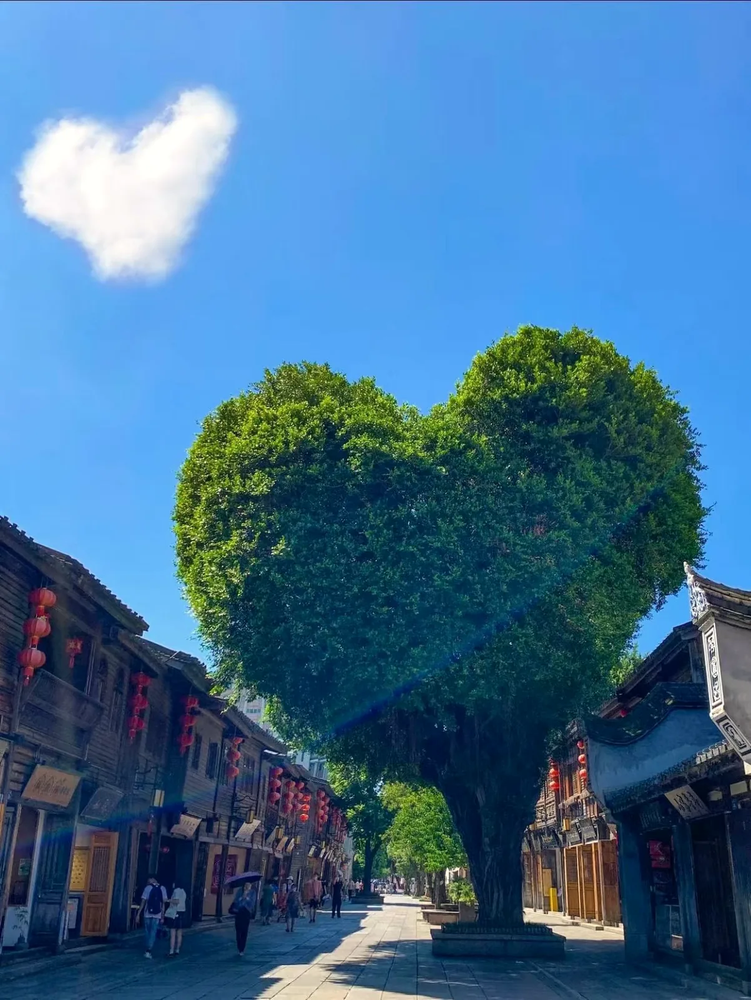
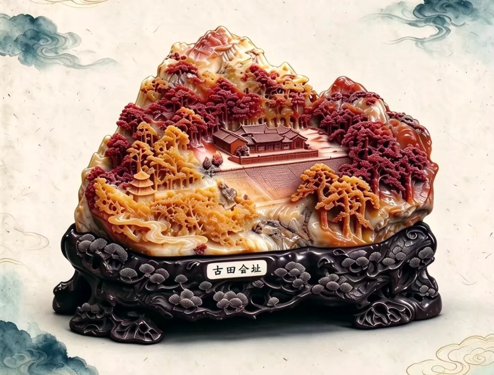
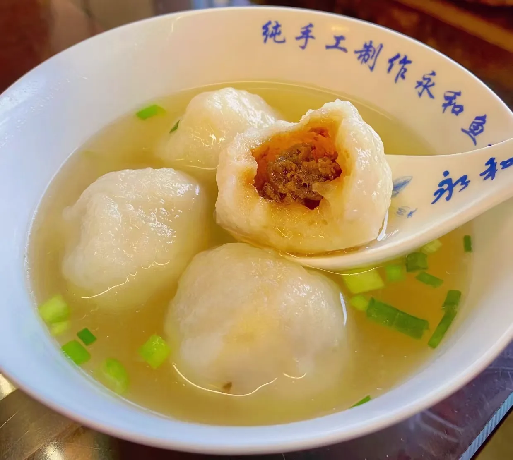

01
历史古迹 · HERITAGE
三坊七巷
福州老城区的文化名片。南后街为中轴，向西为衣锦坊、文儒坊、光禄坊， 向东为杨桥巷、郎官巷、塔巷、黄巷、安民巷、宫巷、吉庇巷。
古厝、街巷与名人故居共同记录闽都千年文脉。木雕窗棂、灰塑门头、 石板路被岁月磨出光泽——走在其中，像走进一部还在翻页的史书。
有福之州 · 山海交融 · 文脉悠长
以校园为眼，以城市为卷。这一期，我们沿闽江顺流而下，走进三坊七巷的坊巷肌理， 在榕树的荫凉里听市井的声音，在寿山石的刀锋上看见匠心的分寸，也在拗九节的一碗甜粥里， 试着为“福”找到可以被触摸的形状。
福州的福，并不悬在匾额之上。它落在马鞍墙的弧线里，落在古榕垂下的气根里， 也落在一锅滚烫的锅边糊、一场正月里的游神中。
福若把福州当作一本书翻，最先遇见的一定是“巷”。 三坊七巷起于晋，成于唐五代，至明清而鼎盛，以南后街为中轴，向西三片称“坊”， 向东七条称“巷”。青砖、木门、马鞍墙，一条街巷就是一层年轮。 林则徐、严复、林觉民、冰心都曾从这里走出，读书声、家国情，都留在这些院落的门楣上。
再往下读，是“树”。福州别称“榕城”，北宋时地方官倡导植榕，绿荫自此成片， 如今城中仍有大量古榕，气根垂地、独木成林。榕树替这座城挡住了漫长暑气， 也替它留住了邻里在树下闲谈的时间——那是最日常的福气。
最后读到的是“水”。闽江穿城而过，把上游的山水与下游的海风连成一条线。 夜幕降临时，两岸灯火落在江面上，光被水揉碎又拼回，像一座城市的呼吸。 从上下杭到烟台山，从渡口到桥，福州人把生活安放在了水边。
福不在天上，它在一碗粥的温度里、一条巷的转角里、一棵树的荫凉里。 —— 本期卷首语
福州老城区的文化名片。南后街为中轴，向西为衣锦坊、文儒坊、光禄坊， 向东为杨桥巷、郎官巷、塔巷、黄巷、安民巷、宫巷、吉庇巷。
古厝、街巷与名人故居共同记录闽都千年文脉。木雕窗棂、灰塑门头、 石板路被岁月磨出光泽——走在其中，像走进一部还在翻页的史书。

榕树是福州的城市符号。北宋起，地方官倡导植榕，绿荫自此铺满街巷， 如今城中古榕依然枝干横斜，气根落地再生新干，形成“独木成林”的奇景。
枝叶繁茂、庇荫一方，象征福气绵长、生生不息。
闽江穿城而过，两岸灯火映照着福州的现代面貌， 也映照着这座城市的奋斗与梦想。

寿山石产于城北寿山一带，以田黄最为珍贵。 石上薄意、圆雕、镂雕诸法并用，方寸之间见山水人物。

鱼丸弹嫩、肉燕滑爽、锅边糊趁热、佛跳墙浓香， 再配一勺芋泥收尾，福气就在烟火气里代代相传。
正月廿九的拗九节，福州人煮一锅甜粥孝敬长辈，因此也被称作“孝顺节”； 春节前后的游神，锣鼓与灯彩穿街而过；端午时节，闽江上龙舟击水。
这些民俗不只是仪式，更是一座城市把“愿你安好”说出口的方式—— 它们把抽象的福，翻译成了可以一起吃、一起看、一起参与的生活。
六个词条，构成有福之州最容易被认出的文化指纹。 从建筑到植物，从河流到工艺，它们彼此咬合，拼出一座城的性格。
本期关于福州城市与民俗的叙述，参考了学校官网、地方公开资料与团队采风记录。 页面中的照片用于课程展示，部分来自公开资料整理。
课程实训演示 · 非官方发布 · 数据与民俗表述以官方资料为准